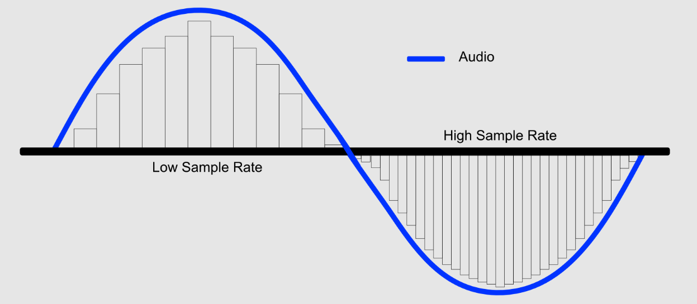

Bitmap afbeeldingen zijn opgebouwd uit een rooster van pixels. Elke pixel bevat specifieke kleurinformatie, waardoor de afbeelding zijn detail krijgt. Bitmapsafbeeldingen kunnen complexe kleurverlopen en details weergeven. Een van de nadelen daarintegen is dat als je gaat inzoomen op een bitmapafbeelding je een duidelijke kwaliteitsvermindering kunt waarnemen. En doordat de gegevens per inviduele pixel is opgeslagen neemt het ook veel ruimte in.
Vector afbeeldingen zijn opgebouwd uit lijnen, vormen en paden, die worden gedefinieerd door wiskundige formules. Dit betekent dat ze oneindig kunnen worden geschaald zonder verlies van kwaliteit. Het voordeel hiervan is dat je niet per inviduele pixel gegevens hoeft op te slaan waardoor de bestandsgrootte vaak kleiner is. Een nadeel van vectorafbeeldingen is dat je moeilijk tot niet complexe foto's of beelden kan laten zien.

Bij het opslaan van geluid word er elke aantal miliseconde of seconde gekeken naar een waarde die de microfoon oppakt, dit heet samplen. Hoe vaker de computer kijkt naar de waarde van de microfoon hoe hoger de kwaliteit van het geluid, maar dit zorgt ook voor grotere bestanden. Bij een frequentie van bijvoorbeeld 40.000 Hz worden er dus 40 duizend metingen in een seconde gedaan.
